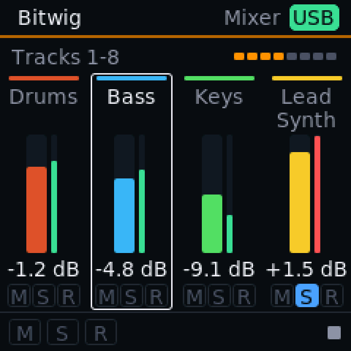

DAW manual · Live · Views
11 Mixer view
Balance a song without reaching for the mouse. The four faders set four track volumes at a time, the knobs pan and send, and the pads mute, solo and arm, while the screen shows eight tracks with their levels.
Download the Live PDF PDF, 0.5 MB
Getting there
Tap SEQ: Device → Mixer → Overview → Device. The status bar reads Tracks 1-8.
What the screen shows

Each strip shows the track's colour and name, a volume bar (grey when muted), a level meter (green, red near clipping), three squares for mute (yellow), solo (the accent) and arm (red), and F1-F4 under the four strips the faders move. The selected track is framed; its name and volume are written along the bottom.
The controls
| Control | In the Mixer view |
|---|---|
| Faders 1-4 | Volume of the strips marked F1-F4 |
| Left / Right | Move the faders to the other four strips; past the edge, to the next or previous eight tracks |
| Oct- + Left / Right | Jump eight tracks back or forward |
| K1-K8 | Pan of strips 1-8 |
| K9-K16 (Knob Bank B) | Send A of strips 1-8 |
| Oct- or Shift pad held while turning | Fine steps |
| Fader Bank B | The selected track's Volume, Pan, Send A, Send B (in every view) |
The screen does not draw pan or send values; watch Live's mixer while you set them.
Soft takeover
A fader never makes a volume jump. While it waits to pick up a volume, its label shows the way: F2^ move fader 2 up, F2v move it down. You see this after Left / Right and after Live moved a volume itself (automation, the mouse). In the other views a fader move shows a short message instead ("Bass: -4.8 dB (move up)"). soft_takeover: False in user_settings.py makes the volume jump to the fader instead.
Mute, solo and arm from the pads
Pad bank B works as everywhere: top row selects tracks, the bottom row does the chosen action (Oct- + pad 9 Mute, 10 Solo, 11 Arm, 12 Stop, 13 Launch, 14 Clips). See Controls that work in every view.
A mixing pass
- Tap SEQ to Mixer, start playback with SEQ PLAY.
- Pull faders 1-4 through their tracks' levels until the ^ / v marks go away, and balance tracks 1-4. Right, then tracks 5-8.
- K1-K8 for pan; Knob Bank to B and K9-K16 to send to the return on Send A.
- Oct- + pad 10 for Solo, then check tracks one by one.
- Select a track with its top-row pad and switch Fader Bank to B: volume, pan, Send A and Send B on the faders.